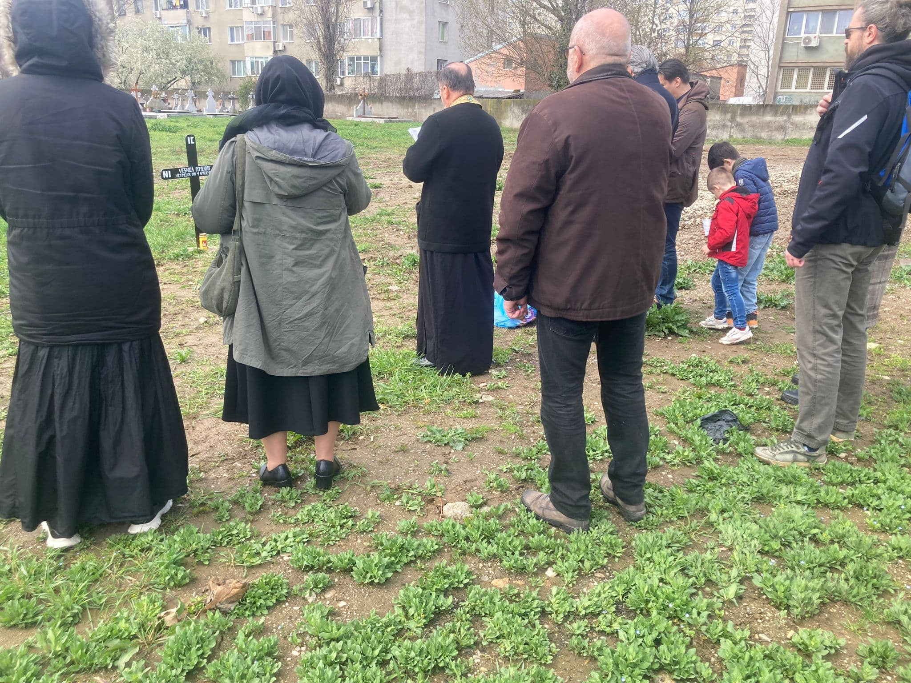

Ziua de 4 aprilie rămâne una de profundă suferință pentru Capitală: în 1944, bombardamentele anglo-americane s-au abătut asupra orașului, provocând, numai în prima zi, peste 6.000 de victime (cifrele oficiale consemnează aproximativ 3.000 de morți și tot atâția răniți) și transformând ireversibil înfățișarea urbei. În ciuda absenței oricărei ceremonii oficiale sau a unui loc de memorie dedicat acestei tragedii, Asociația 4 Aprilie a organizat, ca de fiecare dată în ultimii ani, o comemorare reparatorie în memoria victimelor atacurilor aeriene.
Evenimentul a început la ora 9:00, în cadrul Sfintei Liturghii din Sâmbăta Învierii lui Lazăr, la Biserica din Piața Muncii, unde s-au adunat membrii și susținătorii asociației. A urmat slujba de pomenire săvârșită la Cimitirul 4 Aprilie, de pe Calea Giulești, loc în care este atestată existența gropilor comune ce adăpostesc miile de victime ale acelor zile. La fața locului a fost ridicată o nouă cruce comemorativă, menită să o înlocuiască pe cea amplasată în urmă cu doi ani - prima înălțată după tragedie și deteriorată de intemperii.
În cadrul parastasului, conform tradiției, Părintele a pomenit numele tuturor victimelor cunoscute, nume identificate în urma unei cercetări arhivistice riguroase, după care a fost rostită o scurtă alocuțiune de către cei prezenți. A fost evocată, de asemenea, și memoria generalului Radu Theodoru, a cărui dispariție a lăsat un gol adânc în rândurile participanților. Mereu prezent la aceste întâlniri, el reușea, an de an, să evoce într-un mod autentic acele momente trăite în prima persoană, făcând totodată apel la trezirea conștiințelor.
La ora 13:45, momentul lansării primelor bombe asupra orașului, mai multe biserici din nordul Bucureștiului, dar și din alte zone, au răspuns și în acest an - al treilea consecutiv - apelului Asociației 4 Aprilie, bătând clopotele timp de un minut, în semn de solidaritate și de aducere-aminte, marcând astfel, în mod sugestiv, momentul fatidic.
Mai mult, anul acesta, în urma demersurilor Asociației 4 Aprilie, s-a clarificat în sfârșit regimul juridic al terenului Cimitirului 4 Aprilie, dovedindu-se că acesta se află în proprietatea Municipiului București. Acest deznodământ important va preveni, pe de o parte, atribuirea terenului unei destinații nepotrivite și va permite, pe de altă parte, ridicarea unei troițe comemorative - un alt obiectiv statuar al Asociației.
Avem datoria să spunem mai departe povestea acestor oameni și să ne asigurăm că memoria lor va rămâne vie. Memoria se cinstește prin acțiune.
Consiliul Director al Asociației 4 Aprilie
Sursă: 4aprilie1944.ro
